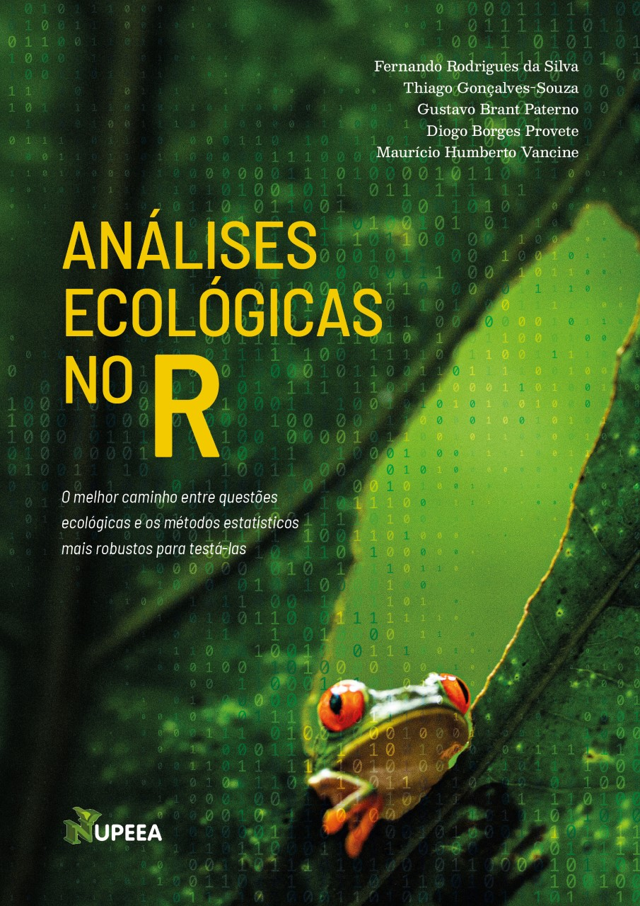

Welcome

The online version is available free of charge, and the source code required to reproduce all the content of the book is hosted on GitHub.
This book was written in Rmarkdown and compiled using the bookdown package.
eBook
The book can also be accessed for free in eBook format.
The printed version of the book can be purchased from Clube de Autores or Amazon.
How to cite
We recommend that readers cite the book in their academic work whenever possible.
Da Silva FR, Gonçalves-Souza T, Paterno GB, Provete DB, Vancine MH. 2022. Análises ecológicas no R. Nupeea : Recife, PE, Canal 6 : São Paulo. 640 p. ISBN 978-85-7917-564-0.
@book{da_silva_etal_r_2022,
address = {Recife, PE},
edition = {Primeira edição},
title = {Análises ecológicas no R},
isbn = {9788579175640},
shorttitle = {Análises ecológicas no R},
abstract = {"Este livro introduz a você a análise de dados ecológicos através da linguagem R. O livro descreve como os códigos devem ser consequências das perguntas que a pesquisa ecológica pretende responder. O texto é intercalado com pedaços organizados e claros de código e gráficos, o que torna a leitura dos capítulos bastante fluida e dinâmica, principalmente para quem gosta de executar os códigos no seu computador conforme lê os capítulos. É como uma aula prática guiada."--},
publisher = {Nupeea},
author = {Da Silva FR, Gonçalves-Souza T, Paterno GB, Provete DB, Vancine MH},
year = {2022},
note = {},
keywords = {Análises dados – Ecologia, Linguagem de programação (Computadores), Métodos científicos, Tecnologia – Aspectos ambientais},
}How to contribute
If you find errors in the book or have suggestions to improve its content, open an issue in the repository (you need to register on GitHub) and describe the problem or your suggestions. If you find typos, you can fix them by clicking “Edit this page” on the right sidebar. After making corrections, submit a pull request on GitHub. Your contribution is very important and welcome so that we can improve the book for future editions.
Project support
Even with the expansion of automatic translation tools, as well as books, blogs, and tutorials, we still believe that this material is necessary and can positively impact the teaching of statistics for students and professionals in ecology and related fields. For this reason, we created a project to continuously update and expand the book. Our goal is not only to invest in the book itself, but also to offer courses in universities and regions with limited resources, create podcasts and videos on YouTube, among other initiatives.
It is important to emphasize that all of this is (and will always be!) done free of charge, in a fully open and non-profit project. Additionally, to maintain this initiative, we need to acquire computers and other equipment such as cameras and microphones. Therefore, for this project to continue, users interested in supporting it can do so in different ways:
You can recommend the book to others and let them know about this initiative
You can share the book and the project on your social media using the hashtag
#ecologiaRto increase visibilityIf you are a science communicator and plan to use the book in your channel, briefly mention our project and direct your audience to it
You can cite or link the book in your academic work
You can star the GitHub livro_aer repository
You can subscribe to our YouTube channel, like, comment, and share the videos
You can purchase the printed book via Clube de Autores or Amazon, helping support the project through royalties
If you are able to “adopt” a university, you can purchase the book and donate it to a university library
You can make direct donations of any amount via Pix
analisesecologicasnor@gmail.comor PayPal (to Maurício Humberto Vancine, one of the co-authors)
Note: The funds raised from book sales and donations, as well as how they are used, will always be disclosed on the book website and on social media using the hashtag #ecologiaR.
YouTube
Criamos um canal no YouTube para divulgarmos cursos, aulas e outros conteúdos. Inscreva-se para ter mais informações sobre o livro e o projeto.
We created a YouTube channel to share courses, lectures, and other content. Subscribe to receive updates about the book and the project.

License
The online version of this book will always be free and distributed under the CC BY-NC 4.0 license.

The online version of the book is hosted on the Netlify platform.